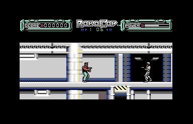
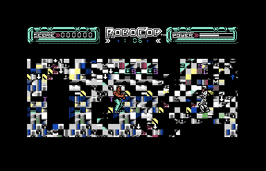

<meta charset="utf-8">
<meta name="viewport" content="width=device-width, initial-scale=1">
<title>RoboCop: discoveries</title>
<link rel="preconnect" href="https://fonts.googleapis.com">
<link rel="stylesheet" href="https://fonts.googleapis.com/css2?family=Lato:wght@400;700;900&family=IBM+Plex+Mono:wght@400;500&display=swap">
<style>
:root{
  --bg:#23262d; --paper:#e9e7e1; --surface:#ffffff; --surface-2:#f1efea; --line:#d5d3cc; --line-soft:#e0ded8;
  --ink:#2f3136; --ink-soft:#55585f; --ink-mute:#80838a;
  --link:#1f5fa8; --link-hover:#154480; --accent:#1f5fa8;
  --amber:#c25a00; --cyan:#1f5fa8; --coral:#d04a3a; --green:#2a8a4a; --violet:#4a5bd6; --hl:#fff0c2;
  --chip:#2f3136; --chip-ink:#ffffff;
  --c64blue:#40318d; --c64grey:#686868;
  --fd:'Lato',system-ui,sans-serif; --fb:'Lato',system-ui,sans-serif; --fm:'IBM Plex Mono',ui-monospace,Menlo,monospace;
  --col:1080px; --gx:68px; --fs:17px; --lh:1.6; --hw:900; --h1:46px; --h2:26px; --sy:48px; --pp:26px; --r:10px;
  --plate-shadow:0 1px 2px rgba(0,0,0,.05),0 4px 14px rgba(0,0,0,.05);
}
*{box-sizing:border-box}
html{background:var(--bg);min-height:100%}
body{background:var(--paper);color:var(--ink);font-family:var(--fb);font-size:var(--fs);line-height:var(--lh);max-width:var(--col);margin:0 auto;min-height:100vh;padding:0 0 4rem}
h1,h2,h3{font-weight:var(--hw);letter-spacing:-.01em;text-wrap:balance;color:var(--ink);margin:0}
.wrap{padding:0 var(--gx)}
.hero{padding:48px var(--gx) 8px;text-align:left}
.eyebrow{font-family:var(--fm);font-size:12px;letter-spacing:.08em;text-transform:uppercase;color:var(--ink-mute);margin:0 0 10px}
.hero h1{font-size:var(--h1);line-height:1.15;letter-spacing:-.02em;margin:0 0 14px}
.hero .sub{margin:0 0 .6em;color:var(--ink-soft)}
section{padding:var(--sy) 0 24px}
section:last-of-type{border-bottom:none}
.fig{font-family:var(--fm);font-size:12px;letter-spacing:.08em;text-transform:uppercase;color:var(--ink-mute);margin:0 0 10px}
h2.t{font-size:var(--h2);margin-bottom:12px}
.lede{color:var(--ink-soft);margin:0 0 30px}
.plate{background:var(--surface);border:1px solid var(--line);border-radius:var(--r);padding:var(--pp);box-shadow:var(--plate-shadow)}
.cap{font-size:14px;color:var(--ink-mute);margin-top:14px;line-height:1.55}
.cap b{color:var(--ink);font-weight:700}
code{font-family:var(--fm);font-size:.82em;background:var(--chip);color:var(--chip-ink);border-radius:4px;padding:2px 6px;overflow-wrap:break-word;-webkit-box-decoration-break:clone;box-decoration-break:clone}

.ft-grid{display:grid;gap:6px}
.ft-grid button{padding:0;position:relative;line-height:0}
.ft-grid canvas{width:100%;image-rendering:pixelated;display:block}
.ft-tag{position:absolute;left:3px;top:3px;font:500 11px/1.3 var(--fm);background:rgba(255,255,255,.88);color:var(--ink);border-radius:3px;padding:1px 4px}
.ft-mark{position:absolute;right:3px;bottom:3px;font:500 10px/1.3 var(--fm);background:var(--chip);color:var(--chip-ink);border-radius:3px;padding:1px 4px}
.ft-big canvas{width:100%;max-width:768px;image-rendering:pixelated;display:block;margin:0 auto}
.ft-table{border-collapse:collapse;font-size:14px;width:100%}
.ft-table td,.ft-table th{border-bottom:1px solid var(--line-soft);padding:5px 8px;text-align:left;vertical-align:top}
.ft-two{display:grid;grid-template-columns:1fr 1fr;gap:16px;align-items:start}
.ft-four{display:grid;grid-template-columns:repeat(3,1fr);gap:12px;margin:0 0 20px}
.ft-four .plate,.ft-two .plate{margin:0;padding:12px}
.ft-shot,.ft-px{width:100%;height:auto;image-rendering:pixelated;display:block}
.ft-wide{max-width:960px;margin:0 auto}
.plate{margin:0 0 22px}
.ft-scroll{overflow-x:auto}
.ft-lab{display:block;font-family:var(--fm);font-size:13px;color:var(--ink-soft);margin:6px 0}
.ft-range{width:100%;max-width:520px;display:block}
.ft-controls{display:grid;grid-template-columns:repeat(3,1fr);gap:14px;margin:12px 0 0}
.ft-read{font-family:var(--fm);font-size:14px;background:var(--surface-2);border-radius:6px;padding:10px 12px;margin:12px 0 0}
.ft-bar-out{height:12px;background:var(--surface-2);border:1px solid var(--line);border-radius:6px;overflow:hidden;margin:10px 0 0;max-width:520px}
.ft-bar-out div{height:100%;background:repeating-linear-gradient(45deg,var(--amber) 0 6px,#e08a3c 6px 12px)}
.ft-meter{position:relative;width:110px;height:18px;background:var(--surface-2);border:1px solid var(--line);border-radius:4px;overflow:hidden}
.ft-meter span{position:absolute;left:0;top:0;bottom:0;background:var(--cyan);opacity:.35}
.ft-meter b{position:relative;font:500 12px/18px var(--fm);padding-left:6px}
.ft-objs{white-space:nowrap}
.ft-obj{display:inline-flex;flex-direction:column;align-items:center;margin:0 3px 0 0;padding:2px;background:#222;border-radius:4px;vertical-align:top}
.ft-obj i{font:500 10px/1.2 var(--fm);color:#fff;font-style:normal}
.ft-swapped{outline:2px dashed var(--amber);outline-offset:-2px}
.ft-swapped i{text-decoration:line-through;text-decoration-color:var(--amber)}
.ft-table canvas{background:#222;border-radius:4px;image-rendering:pixelated}
.ft-dead{display:flex;flex-wrap:wrap;gap:6px;margin:12px 0 0}
.ft-dead button{font-size:12px;padding:4px 8px}
@media (max-width:760px){:root{--gx:16px;--h1:36px;--pp:14px}.ft-two,.ft-four,.ft-controls{grid-template-columns:1fr}}
sup.fn{font-size:.7em;line-height:0}
sup.fn a{text-decoration:none}
sup.fn + sup.fn::before{content:","}
.overview-shot{margin:22px 0}
.overview-shot img{width:100%;max-width:768px;height:auto;aspect-ratio:384/272;image-rendering:pixelated;display:block}
.overview-shot figcaption{font-size:14px;color:var(--ink-mute);margin-top:8px;max-width:768px}
</style>
<!-- tabs -->
<header class="hero">
  <p class="eyebrow">Commodore 64 · 1988 · Data East</p>
  <h1>RoboCop: discoveries</h1>
  <p class="sub">What reading every byte of the three loads turned up: a bug that makes a whole street open fire, a disk that cannot draw one stage, and the jokes the programmers left in.</p>
</header>
<main class="wrap" data-part="">

<section id="words">
  <p class="fig">01 · The level skips</p>
  <h2 class="t">SUEDEHEAD and DISAPPOINTED</h2>
  <p>Typed on level one's title screen, SUEDEHEAD loads level two and starts it, as if stage three had just been finished. DISAPPOINTED, on level two's title, does the same for level three. The title code waits for each letter in turn (<span data-part="level-1"><code>$F69E</code></span>), and any other key starts the count again. The score is cleared, so the skip is no help with the high-score table. Both words were used to take the snapshots these pages were made from.</p>
  <p>Other cheats printed for RoboCop do not fit this disk. Holding F, G, H, and J with left or right to fly cannot work here, because the only keys the three loads read are space, RUN/STOP, and the letters of the two words. The POKEs for endless time and power point into the middle of other routines in this version: <code>44179</code> is <span data-part="level-1"><code>$AC93</code></span>, part way through the clock's set-up. They belong to another release.</p>
</section>

<section id="scores">
  <p class="fig">02 · The high scores</p>
  <h2 class="t">ALIENATION, ANGST, MISERY</h2>
  <p>The high-score table the game ships with (<span data-part="resident"><code>$0E40</code></span>) has eight entries, all of 4,000 points, named ALIENATION, ANGST, MISERY, FRUSTRATION, TORMENT, DESPAIR, a row of dots, and HAVE A NICE DAY.</p>
</section>

<section id="fire-bug">
  <p class="fig">03 · A bug</p>
  <h2 class="t">One enemy low on the screen, and everyone fires</h2>
  <p>In level three each enemy decides whether to fire by looking at its own height on the screen. The routine at <span data-part="level-3"><code>$9522</code></span> means to test the enemy's own Y position, <code>$2F,x</code>, but the instruction tests <code>$2F</code>, the Y of the first enemy slot only. So whenever the first enemy is low enough, every enemy that has reloaded fires, wherever it stands; and while the first enemy is high, none of them does. Level two's copy of the routine tests <code>$2F,x</code>, as meant (<span data-part="level-2"><code>$9BBF</code></span>).</p>
</section>

<section id="disk-b">
  <p class="fig">04 · Two disks</p>
  <h2 class="t">A second disk that cannot draw stage seven</h2>
  <p>Two disk images of the same Data East release were compared. They hold the same files, but five of them differ in content, and two have their names swapped. On the second disk, stage seven draws a screen of rubbish.</p>
  <div class="ft-two">
    <div class="plate"><p class="cap"><b>First disk.</b> Stage seven, the lifts.</p></div>
    <div class="plate"><p class="cap"><b>Second disk.</b> The same stage, started the same way.</p></div>
  </div>
  <p>The reason is in where stage seven's tiles live. Level two's files do not contain them. They come with level one, in LOAD1, and sit at <span data-part="resident"><code>$C400</code></span> all through level one, in memory no level loads over, until stage seven reads them. The second disk's LOAD1 has other bytes at <code>$C400</code>, but its level two still reads stage seven's tiles from there, so the stage is built from the wrong data.</p>
  <p>The second disk's LOAD1 also lacks 18 bytes that the first has. On the first disk, the title screen points the NMI vector at a handler that only acknowledges CIA 2 (<span data-part="level-1"><code>$85E7</code></span>), which stops the RESTORE key from breaking into the game. The second disk leaves both out. Its level files have rewritten and extra routines as well. Which of the two builds came first is not known.</p>
</section>

<section id="stairs">
  <p class="fig">05 · Left behind</p>
  <h2 class="t">Stair code with no stairs</h2>
  <p>Level three carries level two's code for climbing stairs, including the test for a stair character next to RoboCop's feet, but no instruction in level three reaches it (<span data-part="level-3"><code>$9371</code></span>). Stage eight has no stairs.</p>
  <p>Other code and data were left in the files without being used:</p>
  <ul>
    <li>A tune that no code plays, and its instruments, at <span data-part="resident"><code>$BBCC</code></span>.</li>
    <li>A routine that reads a hexadecimal number from text (<span data-part="resident"><code>$CD50</code></span>), from the tool the game was developed with.</li>
    <li>Pages of alternating <code>$00</code> and <code>$FF</code> bytes, the pattern a C64's memory holds when it is switched on, saved into the files with the rest.</li>
    <li>The photofit's tune, tune 2, in all three levels' tune tables, though only level two plays it (<a href="music.html#music">Music</a>).</li>
  </ul>
</section>

<section id="bonus">
  <p class="fig">06 · Numbers</p>
  <h2 class="t">A time bonus that triples, and a short second</h2>
  <p>Published guides give the time bonus as 100 points a second. That is level one's. Levels two and three pay 300 a second, by the same routine with a 3 where level one has a 1 (<span data-part="level-2"><code>$B7AD</code></span>). And a second on the clock is <a href="gameplay.html#clock">48 frames</a>, which on the American machine this version was made for is 0.8 of a second.</p>
</section>

<section id="speech">
  <p class="fig">07 · Speech</p>
  <h2 class="t">"RoboCop", through the volume register</h2>
  <p>After fire is pressed on the title screen, a voice says "RoboCop". The sound chip has no way to play a recording, but its master volume can be changed thousands of times a second, and each change moves the output a little. The game stops the music and writes four-bit samples straight to the volume register, <code>$D418</code>, in a timed loop (<span data-part="level-1"><code>$EC93</code></span>). Level three uses the same method when RoboCop dies (<span data-part="level-3"><code>$EB99</code></span>).</p>
</section>
</main>

<footer style="margin:16px 0 0;padding:22px var(--gx) 0;border-top:1px solid #e0ded8;font-family:'IBM Plex Mono',ui-monospace,Menlo,monospace;font-size:12px;color:#80838a"><a href="https://github.com/gamesexplained/gamesexplained" style="color:#1f5fa8;text-decoration:none">GitHub</a> · <a href="https://discord.gg/3V9GWyRDWV" style="color:#1f5fa8;text-decoration:none">Discord</a><br>© Games Explained contributors. Write-ups, facts and symbol maps are available under <a href="https://creativecommons.org/licenses/by-sa/4.0/" style="color:#1f5fa8;text-decoration:none">CC BY-SA 4.0</a>; code under <a href="https://opensource.org/licenses/MIT" style="color:#1f5fa8;text-decoration:none">MIT</a></footer>
